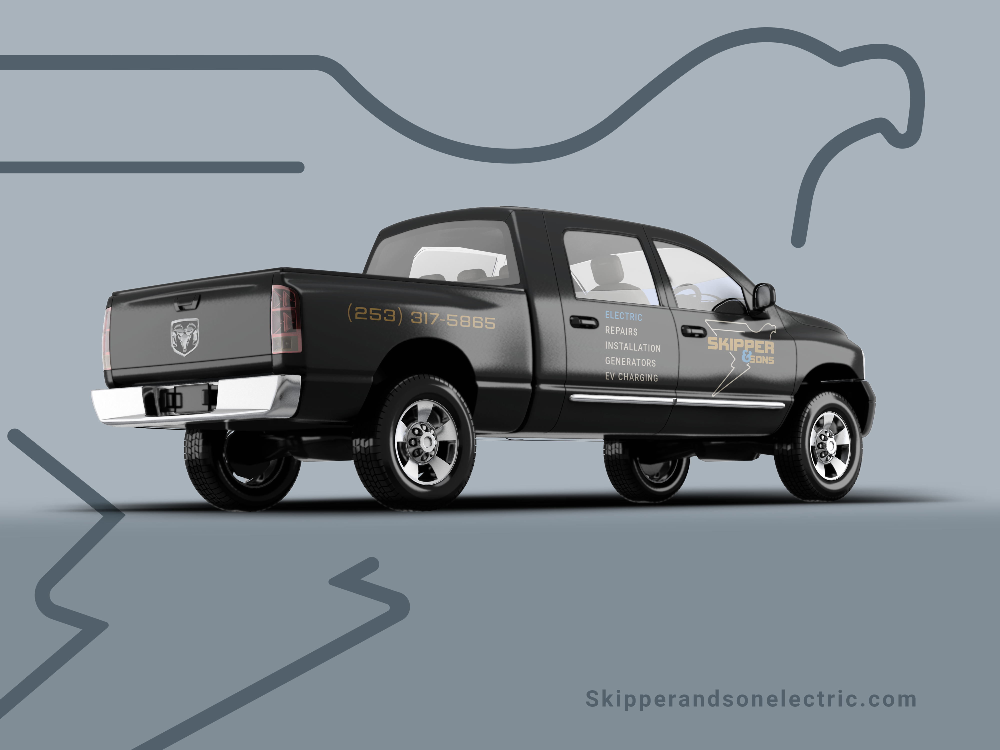
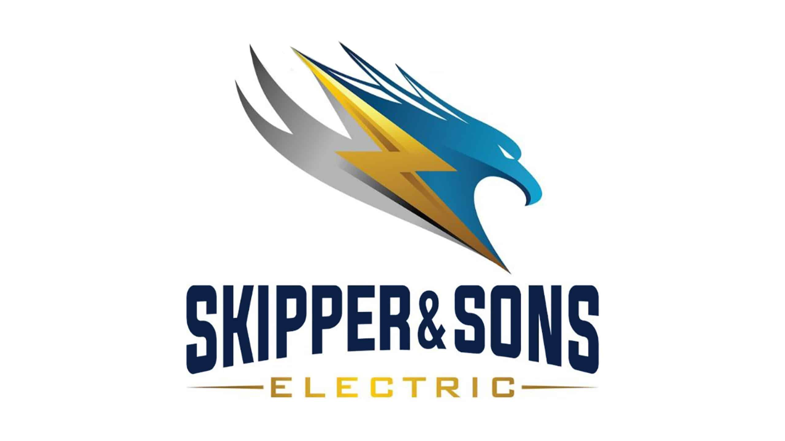
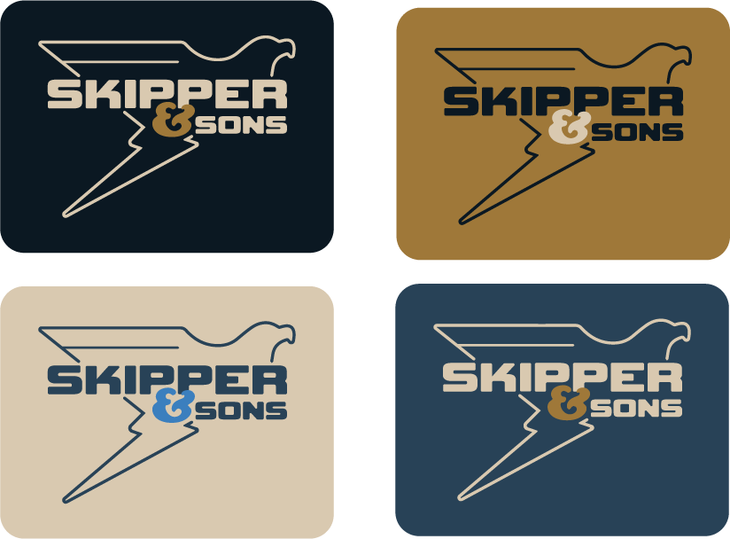
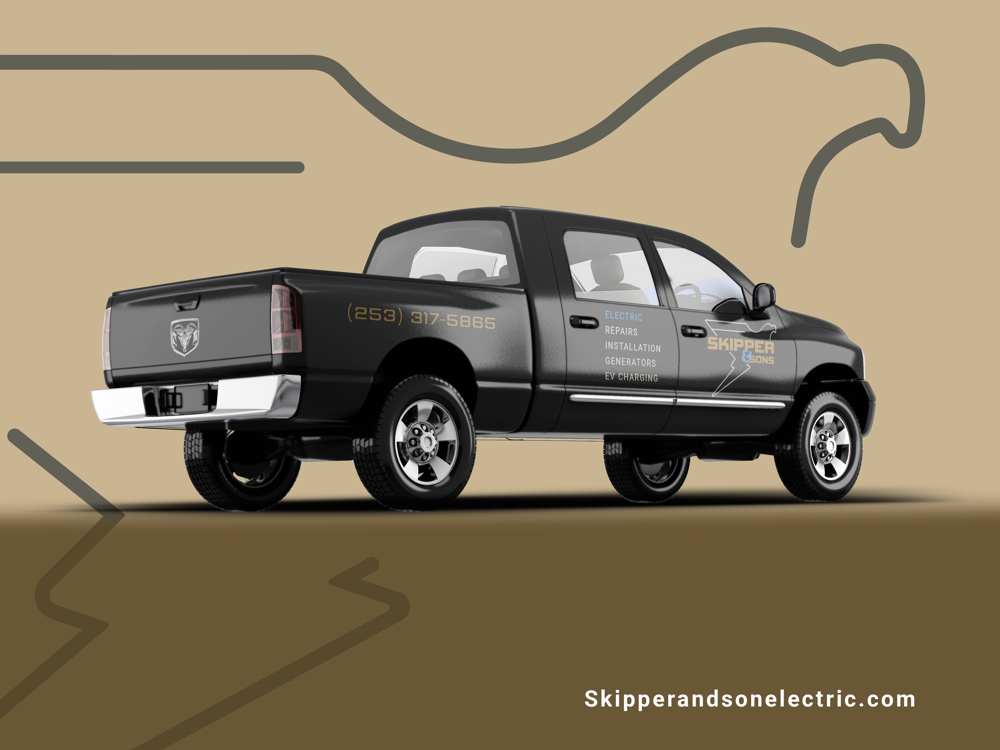
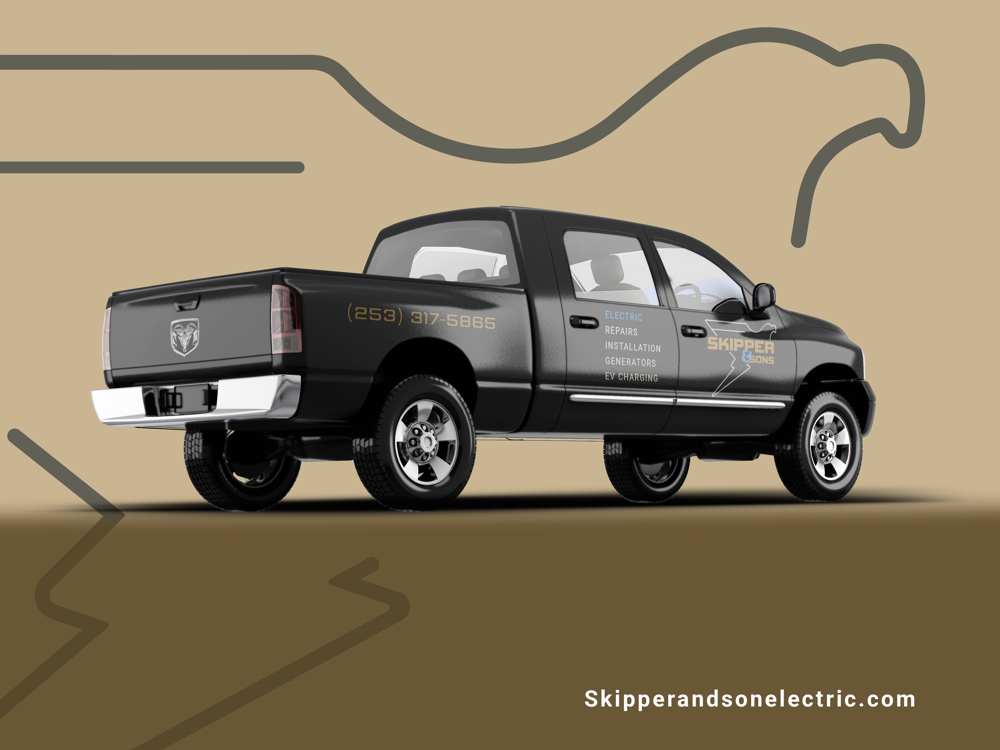

Skipper and Sons

Overview
This project modernized and simplified Skipper & Sons Electric's brand identity by replacing a cluttered, inconsistent system with a streamlined design. I introduced a bold bird‑and‑lightning logo, a modular color palette, and clear typography hierarchy. Together, these elements reduce visual noise and position Skipper & Sons as a modern, reliable, and approachable electrical service provider.
Logo

Colors

Previous Design Issues
The original identity had cluttered layouts, inconsistent logo usage, and multiple logos repeated across materials. Promotional offers competed for attention.
After
More
 
